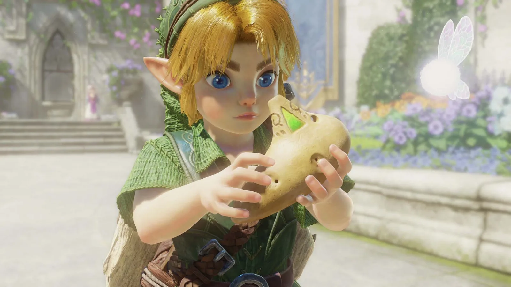
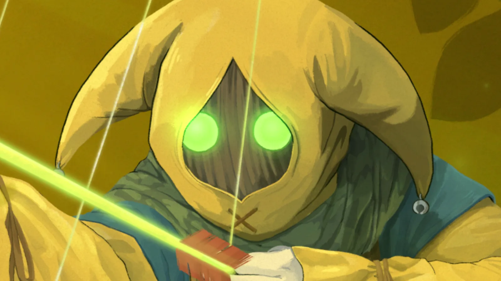

18 de noviembre de 2026
18 de noviembre de 2026
Phasmophobia recibirá su actualización Resonance el 24 de noviembre con nuevo equipamiento y el salto a Unity 6
Kinetic Games confirmó que la próxima gran actualización de Phasmophobia llegará el 24 de noviembre a todas las plataformas. La actualización gratuita incorporará nuevas herramientas para investigar fenómenos paranormales, mejoras en el reconocimiento de voz y cambios técnicos importantes con la migración del juego a Unity 6.
18 de noviembre de 2026Sony gana el juicio colectivo de casi 2.000 millones de libras por los precios de PlayStation Store
El Tribunal de Apelación de la Competencia del Reino Unido desestimó una demanda colectiva que representaba a unos 12,2 millones de consumidores y reclamaba una compensación multimillonaria por los precios de los juegos digitales y los contenidos adicionales en PlayStation Store. El fallo concluyó que no se había demostrado una infracción de la legislación de competencia.
 18 de noviembre de 2026
18 de noviembre de 2026
GTA VI lidera las nominaciones a The Game Awards 2026 con ocho candidaturas
El nuevo juego de Rockstar Games consiguió ocho nominaciones en la edición 2026 de The Game Awards, incluida la categoría Juego del Año. La lista también reconoce a producciones como Control Resonant, Resident Evil Requiem y Phantom Blade Zero. La ceremonia se realizará el 10 de diciembre en Los Ángeles.

17 de noviembre de 2026El remake de Ocarina of Time ya es el juego físico más vendido de Estados Unidos en 2026
La nueva versión de Ocarina of Time superó el millón de copias físicas vendidas durante su primera semana en Estados Unidos, según datos de Circana. El resultado lo convirtió en el lanzamiento físico más exitoso del año hasta el momento y marca un nuevo hito para la franquicia.
 17 de noviembre de 2026
17 de noviembre de 2026
Miyamoto recibirá el primer Legend Award de los D.I.C.E. Awards
La Academy of Interactive Arts & Sciences anunció que el histórico creativo de Nintendo será el primer destinatario de un nuevo reconocimiento que distinguirá a figuras cuya influencia haya marcado a varias generaciones de la industria. El premio se entregará durante la 30.ª edición de los D.I.C.E. Awards, en febrero de 2027.

17 de noviembre de 2026Slay the Spire 2 recibe su tercera gran actualización con cambios de balance, nuevas cartas y correcciones
Mega Crit lanzó la actualización 0.111.1 de Slay the Spire 2, que reúne cuatro parches de la rama beta e incorpora nuevas reliquias, cartas para el multijugador, ajustes de balance, animaciones y mejoras de accesibilidad. El contenido ya está disponible en la versión principal del juego para PC.
 17 de noviembre de 2026
17 de noviembre de 2026
Uno de cada tres desarrolladores de videojuegos fue despedido en los últimos dos años
El informe State of the Game Industry: November 2026, elaborado por la organización de la Game Developers Conference, reveló que el 34% de los profesionales encuestados perdió su empleo durante los últimos 24 meses. Más de la mitad de quienes fueron despedidos todavía no consiguió otro trabajo.
 16 de noviembre de 2026
16 de noviembre de 2026
Los nominados a The Game Awards 2026 se anunciarán mañana
La organización de The Game Awards confirmó que revelará los nominados de todas las categorías este martes 17 de noviembre, mediante una transmisión especial conducida por Geoff Keighley. La ceremonia principal se celebrará el 10 de diciembre y volverá a reunir a los principales lanzamientos del año.
16 de noviembre de 2026Dispararon contra las oficinas de inXile Entertainment: no hubo heridos y hay un detenido
Un vehículo pasó frente al complejo empresarial donde trabaja el estudio de Wasteland y Clockwork Revolution, en Tustin, California, y desde allí se efectuaron varios disparos. No hubo personas heridas y la policía detuvo a un sospechoso dos días después. La investigación continúa para determinar el motivo del ataque.